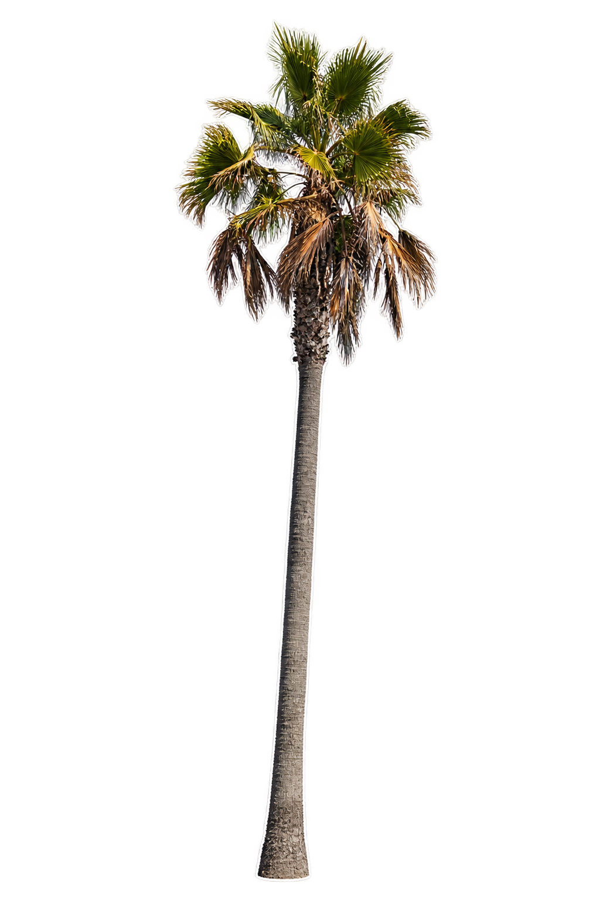
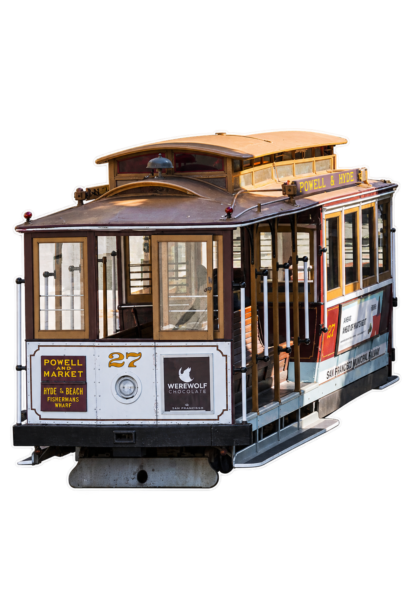
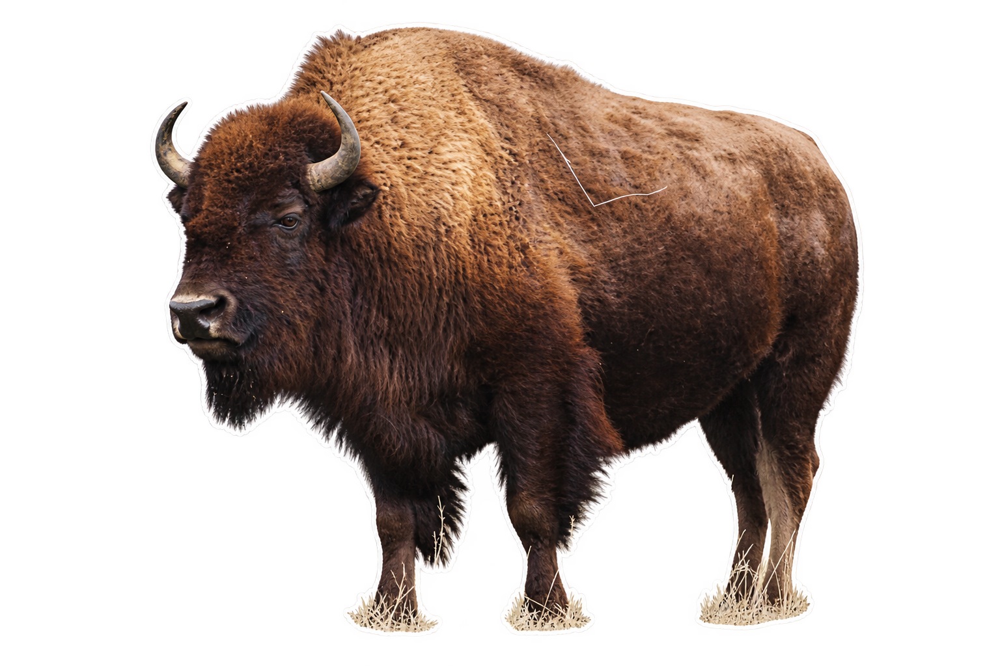

海风翻到蓝色这一页
海岸来信
台阶收着阴影，
海把光铺开。
树下，有人转弯。
蓝色留在纸上，
风从纸边
继续往前。

45 号塔
CALIFORNIA COAST
WESTWARD / 03 · 旅途影像采集白房子，向天空借光
圆顶接住半束光，
另一半藏进白墙。
坡上的绿还没走。
把影子，也留下。


一根细线
托起一团风
GRIFFITH OBSERVATORY
把天空留给纸边。
WESTWARD / 04 · 旅途影像采集金门，把风借给衣角
桥把红色
交给蓝天。
风在卷发里
停了片刻，
又去更远的海湾。
照片也有辽阔。
GOLDEN GATE
风不入镜，却留在每一根发梢。
SAN FRANCISCO / BAY
WESTWARD / 05 · 旅途影像采集把坡道，
折进木头车厢
轨道拐一个弯，
木窗收进白房子。
暖棕色的车顶下，
街道慢慢展开。
这一页的边缘，
也跟着有了坡度。

CABLE CAR
木头的车厢
SAN FRANCISCO
WESTWARD / 06 · 旅途影像采集光，在石头里写信
ANTELOPE CANYON
岩纹把赭红写成淡紫，
光落下来，不急着离开。
石头的褶皱里，也有柔软的地方。
这束光
WESTWARD / 07 · 旅途影像采集HORSESHOE BEND
河流的一封长信
河水绕过岩壁，
把远处写成一个弯。
蓝绿色的那一笔，
留在赭红的纸上。
读到这里，慢一点。
岩石的褶皱
WESTWARD / 08 · 旅途影像采集大地，也写彩色的信
采下一小页颜色
蓝绿留在水心，
赭红沿岸慢慢晕开。
蒸汽让边界轻了些。
水边的色带
YELLOWSTONE / COLOR NOTES
WESTWARD / 09 · 旅途影像采集白色的回信
蒸汽升起，
像未写完的信。
深绿的林线，
压着大地页脚。
天空留着空白。
OLD FAITHFUL
旷野的慢句子
卷毛接住了光，
干草藏住了蹄子。
把这一团安静
贴在纸边。

远远地看
WESTWARD / 10 · 旅途影像采集让绿色，慢慢漫过纸边
MONTANA
给田野留白
小房子退到远处，
绿色就有了余地。
山把云留在肩上，
纸页替草地
留下一小块晴天。
草地 / 云影 / 纸白
MONTANA / FIELD NOTES
WESTWARD / 11 · 旅途影像采集山脚的空白页
白色谷仓，
收好山的影子。
草地铺过门前。
天空没有落款，
信就留在山脚。
BOZEMAN
让一座山，成为一封信的背景。
WESTWARD / 12 · 旅途影像采集Letters from
Elsewhere
从别处寄来的小纸片
桥把红色借给天空，
车窗收进街道的一角。
光在石头里停了片刻。
这些小小的远方，
在纸上，有了重读的形状。
留一页，给下一阵风。
WESTWARD / 15 · 旅途影像采集